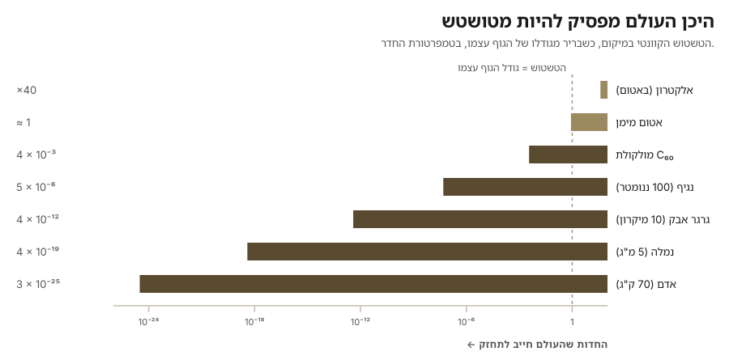

אלוהים הוא לא פראייר.
— פתגם עברי
הפתגם משמש בדרך כלל לחשבונאות מוסרית: אף אחד לא יוצא נקי לנצח, הספרים מסתדרים בסוף. אני רוצה לשאול אותו למשהו צר יותר ומוזר יותר — טענה הנדסית. מה שבא להלן הוא פילוסופיה, לא פיזיקה. הוא אינו מנבא דבר, אינו אוסר דבר, ולא היה שורד מפגש עם שופט או סוקר. זו דרך לקרוא פיזיקה שכבר יש בידינו, והיא מוצעת ברוח הזו. אני רוצה גם לומר מראש ששום דבר כאן אינו תלוי בשאלה אם אלוהים קיים; ”אלוהים“ במסה הזו הוא מציין מקום עבור מי או מה שהיה צריך לקבל את החלטות התכן, והטיעון נקרא אותו הדבר גם אם מתברר שזה אף אחד.
נתחיל בשני קצות העולם, שמתנהגים בצורה שונה לחלוטין. בתחתית, החומר הוא בלתי-מוגדר. עקרון אי-הוודאות של הייזנברג, שנוסח ב-1927, אומר שאי אפשר למדוד במדויק גם את המיקום וגם את התנע: מכפלת אי-הוודאויות שלהם היא לפחות ħ/2. בשפה יומיומית: עבור גופים קטנים (למשל אטומים, מולקולות וכדומה), איננו יכולים לדעת בו-זמנית גם את המיקום וגם את המהירות. הקריאה המודרנית המקובלת — וזו שהניסויים חיזקו בהתמדה — אינה שאנחנו מודדים מגושמים שמפריעים למה שהם בוחנים, אלא שאין שם זוג ערכים חדים שממתין להתגלות. בקצה העליון (כלומר, כשאנחנו עוסקים בגופים גדולים), לעומת זאת, העולם מוגדר בעקשנות ובשעמום, כלומר, אנחנו יודעים כמעט בוודאות גם את המיקום וגם את המהירות. לכוכב לכת יש מיקום. וכך גם לכדור באולינג, לנמלה, לספל קפה. שום דבר בעצמים רגילים אינו מטושטש, וכל המנגנון של המכניקה הקלאסית עובד בזכות זה.
המעבר בין שני המשטרים האלה אינו עניין של טעם; אפשר לחשב אותו. לכל גוף יש טשטוש קוונטי במיקום — אורך הגל התרמי של דה-ברויי, λ = h/√(2πmkT) — שמתכווץ כשורש המסה. לכל גוף יש גם גודל פיזי, שגדל כשורש השלישי של המסה. שתי העקומות נחתכות, והן נחתכות במקום מעניין. בטמפרטורת החדר, המסה שבה הטשטוש הקוונטי של גוף שווה לקוטרו שלו היא כ-1.4 × 10−27 ק"ג — בטווח של פי שניים ממסתו של אטום מימן בודד.

זו העובדה שדורשת הסבר. מתחת לאטום בודד, מותר לעולם להיות מעורפל לגבי מיקומם של דברים. מעליו, הערפול קורס כל כך מהר שכבר בסקאלה של גרגר אבק הוא טריליונית מן הגרגר, ובסקאלה של אדם הוא עשרים וחמישה סדרי גודל מתחת לכל דבר שיכול להיות משמעותי. מדוע הדיוק מוקצב כך — בשפע למעלה, ובהיעדר מוחלט למטה? או במילים אחרות: מדוע איננו מתעניינים בחלקים הקטנים, ומתעניינים עד מאוד בגופים הגדולים?
כאן אני רוצה לשאול את שאלת המהנדס ולא את שאלת הפיזיקאי. נניח שהיית צריך לתחזק את העולם הזה: לשמור עליו עקבי, בכל מקום, עבור כל חלקיק, לנצח. איפה היית חוסך? כל מי שבנה סימולציה גדולה עונה אותה תשובה, כי יש רק תשובה טובה אחת: תחסוך היכן שאיש אינו מסתכל. מנועי גרפיקה בזמן אמת מלטשים בדיוק את האינטואיציה הזו כבר ארבעים שנה. אתה לא מרנדר את מה שמחוץ למסך. אתה לא שומר את הסלעים הבודדים על ההר הרחוק; אתה שומר כלל שייצר סלעים סבירים אם מישהו יטרח ללכת לשם. אתה מחזיק גרסה גסה של הכול וגרסה מדויקת של מעט הדברים שנבחנים כרגע, ומחליף ביניהן ברגע הבחינה ולא לפניו. כל האמנות היא בהחלטה מה אפשר להשאיר בלתי-מוכרע בלי שאיש ישים לב.
לאי-ההגדרות הקוונטית יש בדיוק את הצורה הזו. פונקציית הגל היא מה שמכניקת הקוונטים נותנת לך בפועל במקום חלקיק: גל מתמטי פרוס המוגדר על פני כל המקומות שבהם החלקיק עשוי להימצא, וריבוע גודלו בכל נקודה נותן את ההסתברות למצוא אותו שם. ופונקציית הגל אינה תיאור של מיקום מוגדר שמוסתר מאיתנו; היא כלל לייצור מיקום אם מישהו יתעקש על אחד. סופרפוזיציה היא המצב של ”טרם הוכרע“. מדידה היא הקריאה שכופה הכרעה. והאקראיות — החלק שמטריד אנשים מאז 1927, החלק שאיינשטיין לא הצליח לקבל — היא בדיוק איך שאחסון מאבד-מידע נראה מבפנים. אם שמרת כלל במקום ערך, אתה יכול לשחזר את הסטטיסטיקה אבל לא את התשובה הבודדת. התשובה מעולם לא נשמרה. אין למה להיות נאמן.
וכעת התלות בגודל נופלת מעצמה. קח אלקטרון אחד באטום אחד בתוך סלע. איש אינו תלוי במיקומו. הזנח אותו לגמרי, החלף אותו בענן הסתברות, ושום דבר במורד הזרם לא ישים לב — הכימיה עדיין עובדת, הסלע עדיין יושב שם, הספרים עדיין מסתדרים. עכשיו קח את הסלע. מיקומו נושא משקל עבור כל דבר שהוא נוגע בו: מה הוא מסתיר, על מה הוא לוחץ, מה ניתז ממנו, איפה נופל צילו, מי מתוך מיליארד עצמים אחרים יתנגש בו במאה הקרובה. שגיאה שם אינה נשארת מקומית; היא מתפשטת, והיא מתפשטת אל תוך דברים שכן נבחנים. ולכן העולם משלם דיוק מלא עבור צברים ומשלם כמעט כלום עבור הבלתי-רלוונטי הבודד. הוא מוציא היכן שמסתכלים עליו. הוא לא פראייר.
האינטואיציה שמאחורי זה אינה חדשה, ולא יהיה הוגן להציג אותה ככזו. קונרד צוזה הציע ב-1969 שהיקום הוא ממש אוטומט תאי; חרארד 'ט הופט מפתח כבר שנים מצע דטרמיניסטי דמוי-אוטומט מתחת למכניקת הקוונטים; טיעון הסימולציה של ניק בוסטרום (2003) הוא כיום החבר המוכר ביותר במשפחה — אם כי כדאי לזכור שטענתו בפועל היא טרילמה, ולא קביעה שאנחנו מסומלצים. תורת המימוש, כפי שאני משתמש במונח, צנועה יותר מכל אלה. היא אינה טוענת שאנחנו בתוך מחשב. היא טוענת משהו חלש יותר, ולדעתי מעניין יותר: שלמכניקת הקוונטים יש את הצורה של תכן מוגבל-משאבים, ושהצורה הזו היא עובדה על הפיזיקה בין אם מישהו מימש אותה ובין אם לא.
והצורה הזו אינה מטפורה בלבד, משום שלפיזיקה כבר יש סעיף תקציב. חסם בקנשטיין והעקרון ההולוגרפי אומרים שכמות המידע שאזור במרחב יכול להכיל היא סופית, ו— באופן מדהים — שהיא מתכווננת עם שטח הפנים של האזור ולא עם נפחו: כ-1.4 × 1069 סיביות למטר מרובע. זו החתימה של אילוץ אחסון, לא של רצף אינסופי. עקרון לנדאואר מוסיף מחיר מדוד לכל פעולה: מחיקת סיבית אחת מפזרת לפחות kT ln 2 של אנרגיה, מה שהופך חישוב להוצאה פיזית ולא להפשטה חינמית. יקום עם תקציב סיביות סופי ליחידת שטח ומחיר שאינו אפס לכל סיבית שנמחקת הוא יקום שיש לו רואה חשבון.
ועכשיו ההשגות, שהן שלוש, והשנייה רצינית.
הראשונה היא שהפיזיקה כבר מסבירה את המעבר מקטן לגדול בלי לגייס את חסכנותו של אף אחד. דה-קוהרנטיות — שפותחה בידי צה, יוס, זורק ואחרים משנות השבעים ואילך — מראה שגוף גדול משתזר עם סביבתו כה מהר שההתאבכות בין מיקומיו האפשריים הופכת בלתי-נצפית כמעט מיידית; עבור גרגר אבק באוויר סדר הגודל של הזמן הוא 10−36 שניות. הקלאסיות נגזרת, לא מתוכננת. זה נכון לחלוטין, וזו הסיבה שהמסה הזו היא פילוסופיה ולא פיזיקה. אבל היא עונה על שאלה אחרת. דה-קוהרנטיות מסבירה כיצד המנגנון עובד; היא אינה מסבירה מדוע העולם רץ על מנגנון בעל התכונה הזו ולא על אחד בלעדיה. העצלות של תוכנית מוסברת לגמרי מתוך המפרש שלה, ונשארת החלטה שמישהו קיבל.
ההשגה השנייה היא זו שבאמת כואבת: מכניקת הקוונטים היא יקרה, לא זולה. לתאר n חלקיקים קוונטיים מקיימי אינטראקציה דורש בערך 2n אמפליטודות; כמה עשרות מהם ימצו כל מחשב-על קלאסי שנוכל לבנות, וזו כל הסיבה שמחשבים קוונטיים מעניינים. אם הטבע רצה מציאה, דטרמיניזם קלאסי פשוט היה זול בהרבה. אני לא חושב שאפשר להניף יד ולהעלים את זה, ואני מעדיף להשאיר את ההשגה עומדת מאשר להעמיד פנים. שתי התשובות החלקיות שאני מוצא בהן ערך הן אלה. ראשית, העלות המעריכית היא עלות הסימולציה של מכניקת הקוונטים על מצע קלאסי; על מצע קוונטי, המצב הוא פשוט המצב, והמעריכיות שוכנת בתרגום שלנו ולא בדבר עצמו. שנית, החיסכון שנטען כאן נוגע להתחייבות לערכים מוגדרים, לא לניהול חשבונות של אמפליטודות — וערך מוגדר הוא בדיוק סוג הדבר שאחר כך צריך לשמור על עקביותו מול כל השאר, לנצח, בכל רמת דיוק שמישהו עשוי לדרוש בהמשך. אף אחת מהתשובות אינה מכרעת. העמדה הנכונה היא להחזיק את הרעיון ברפיון.
ההשגה השלישית היא שסיפור שאינו יכול להפסיד אינו תיאוריה. נכון. היו ניסיונות להפוך את משפחת הרעיונות הזו לניתנת לבדיקה: בין, דאוודי וסאבאג' הצביעו על כך שאם היקום רץ על סריג מרחב-זמן קובייתי, קרינה קוסמית בעלת האנרגיות הגבוהות ביותר אמורה להראות אניזוטרופיה כיוונית סמוך לחסם GZK — אפקט שאיש לא ראה. ההולומטר של פרמילאב חיפש את הרעד בסקאלת פלאנק שניבא מודל הולוגרפי מסוים ושלל אותו. עד כה החיפושים חזרו ריקים, ולכן התווית הכנה למסה הזו היא ”קריאה אפשרית“, למרות המילה תורה בשמה.
מה שנותר מכל זה הוא דרך הסתכלות. מלמדים אותנו מכניקת קוונטים כקטלוג של פרדוקסים — החתול, שני הסדקים, הפעולה מרחוק — והפדגוגיה מותירה רושם שהסקאלה הקטנה היא המקום שבו היקום מאבד קוהרנטיות. הפוך את התמונה והיא נקראת הפוך: הסקאלה הקטנה היא המקום היחיד שבו רואים את היקום חסכן, שבו הוא מסרב לנהל ספרים שלעולם לא יתבקש להציג. הטשטוש שבתחתית אינו פגם בתמונה. הוא הרזולוציה שבה התמונה עברה רינדור. שום דבר אינו נשמר אם איש לא יבדוק אותו — וכל מה שכן נבדק, מסתדר.